Google Colab
Na disciplina de Ciência de Dados, trabalhamos com o Google Colab para trabalhar com Python: Google Colab

Na disciplina de Ciência de Dados, trabalhamos com o Google Colab para trabalhar com Python: Google Colab
Estatística é a disciplina que utiliza métodos para coletar, organizar e interpretar dados. Ela começa com a estatística descritiva, que resume dados observados para facilitar a compreensão. Os dados podem vir de uma população inteira ou de uma amostra representativa. A estatística inferencial segue, usando amostras para fazer generalizações sobre uma população. As variáveis estudadas podem ser qualitativas, como categorias, ou quantitativas, como números.
Exploramos os tipos de amostragem:
Começamos utilizando o Colab e importamos 3 bibliotecas para usar nos códigos:
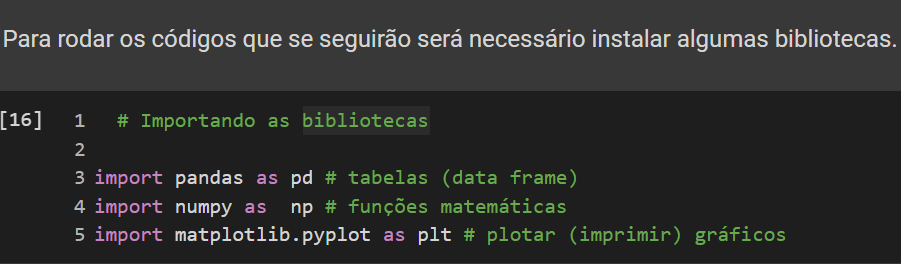Juntamente com a importação do DataFrame do Titanic:
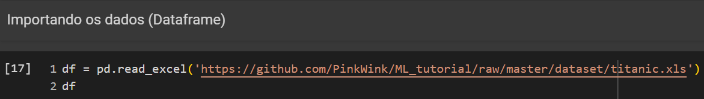Realizamos uma amostra aleatória no DataFrame do Titanic:
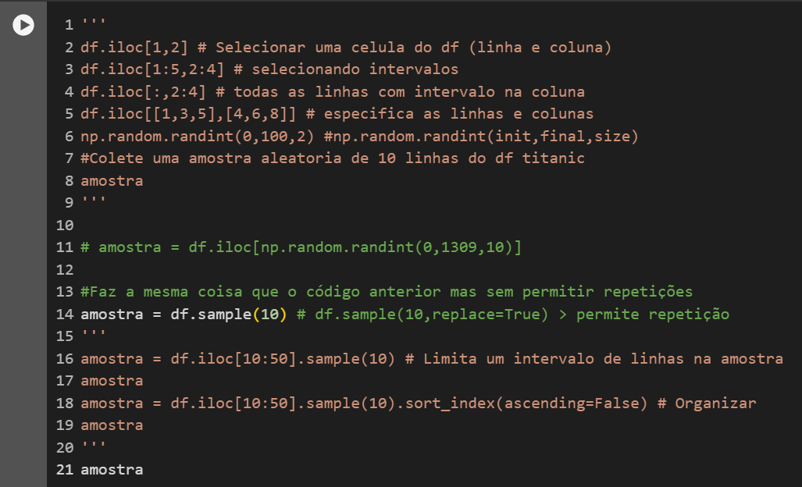Que retorna uma amostra aleatória de 10 linhas do DataFrame:
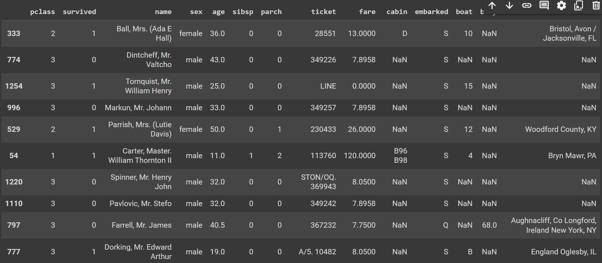Em seguida, realizamos uma amostra sistemática, ou seja, trabalha com intervalos.
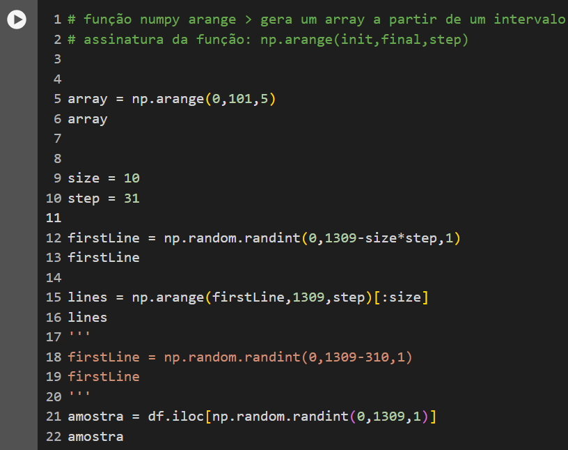Realizamos a amostra estratificada e produzimos duas amostras relacionadas ao sexo dos passageiros de forma aleatória:
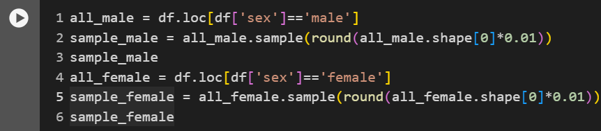Que retorna os seguintes:
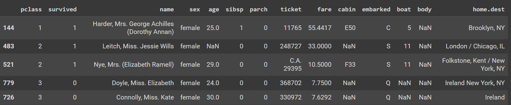E outra amostra mista:
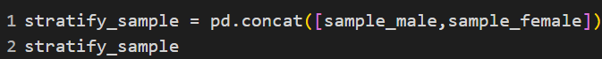Exploramos os tipos de escalas de medição:
Utilizada para categorizar variáveis sem uma ordem inerente. Exemplos incluem gênero, etnia e outras variáveis categóricas. A única medida de tendência central aplicável é a moda.
Aplica uma ordem específica às variáveis. É adequada para classificar conceitos subjetivos como satisfação e opiniões. Não permite calcular a distância exata entre as variáveis.
Mostra a posição e a diferença exata entre as variáveis. Permite comparações e cálculos de diferenças, como nas escalas de temperatura Celsius e Fahrenheit.
Possui todas as propriedades da escala intervalar, mas também inclui um zero absoluto, permitindo comparações de medidas absolutas e proporções. Exemplos incluem idade e preço.
As tendências centrais foram utilizadas para compreender mais os dados presentes em diferentes conjuntos.
A moda em um conjunto de dados é o valor com maior frequência. No caso abaixo, o pandas.DataFrame.mode realiza a função de encontrar a moda no DataFrame que, no caso, é 37.
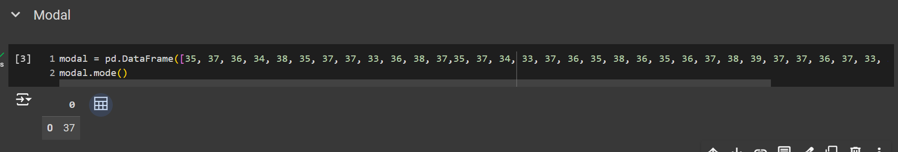Essa função de moda não encontra somente moda simples em um conjunto, podendo ser bimodal (duas modas), polimodal (três ou mais modas) ou ser amodal (não há modas).
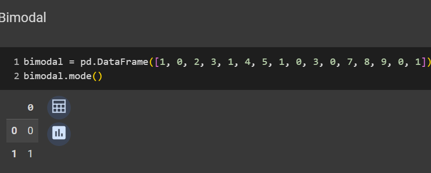Dessa forma, é possível até mesmo retirar uma moda dos valores do DataFrame do Titanic:
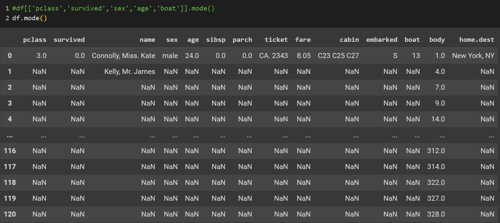E após isso, foram criados gráficos com os valores do DataFrame do Titanic:
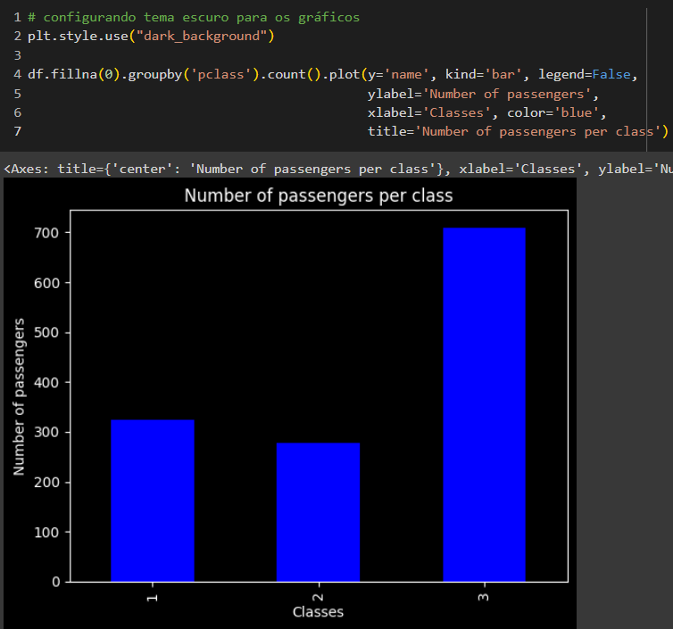A mediana é o valor central em um grupo de elementos.
Nesse caso abaixo, a mediana é o valor exato do meio, pois essa cadeia de elementos é ímpar:
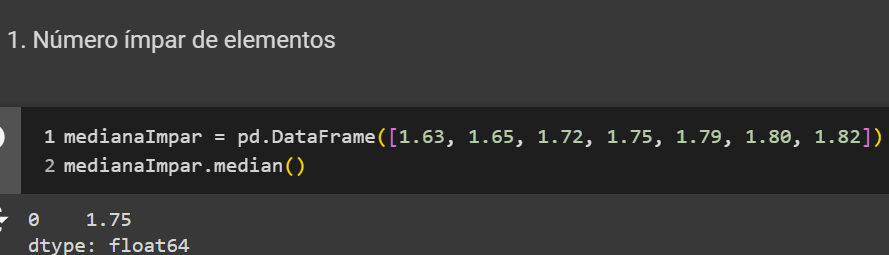Caso os elementos fossem pares, a mediana seria a média entre os dois valores centrais:
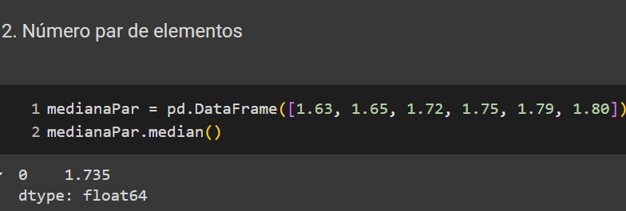O método median() desconsidera valores não numéricos ao definir a mediana, podendo, se desejado, passar parâmetros que considerem NaN ou substituam os mesmos por outro valor:
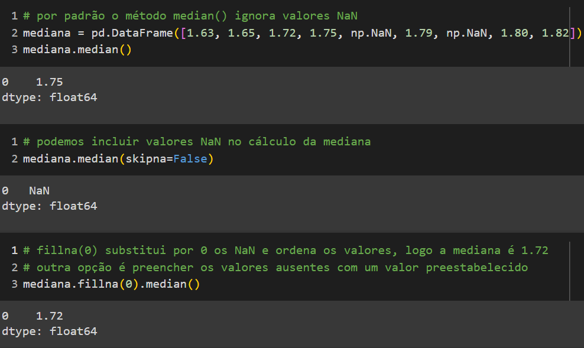Sendo possível aplicar a mediana no DataFrame do Titanic:
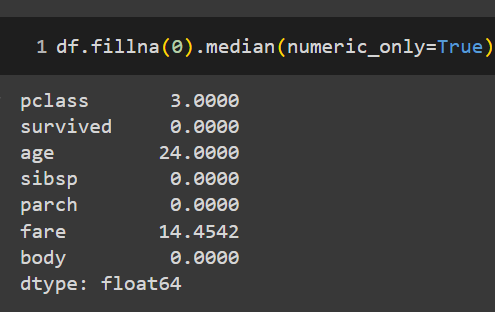A média é calculada somando todos os elementos de um conjunto e, após isso, realizando a divisão pelo número de elementos do mesmo conjunto.
No caso abaixo, foi realizada a média do DataFrame do Titanic:
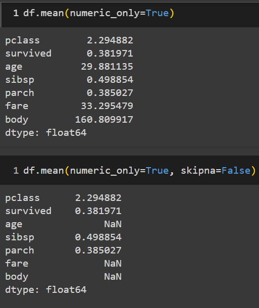O percentil pega um conjunto de dados e transforma sua totalidade em 100%, logo cada posição se torna uma fração desse total. Com base nisso, é possível encontrar um valor específico com base no percentil %.
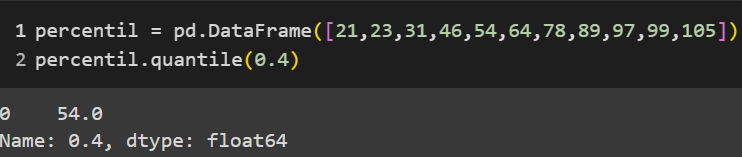pd.DataFrame([21(0%), 23(10%), 31(20%), 46(30%), 54(40%), 64(50%), 78(60%), 89(70%), 97(80%), 99(90%), 105(100%)])
Nesse caso, o percentil que foi selecionado foi 40%, sendo retornado o valor 54. Caso o percentil selecionado não esteja presente no conjunto, o valor será retirado do intervalo entre os valores.
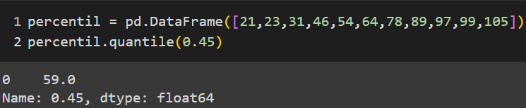O percentil 45% não se encontra no conjunto, porém é possível utilizar o intervalo entre 40% e 50%: 55(41%), 56(42%), 57(43%), 58(44%), 59(45%).
Sendo possível obter mais de um percentil:
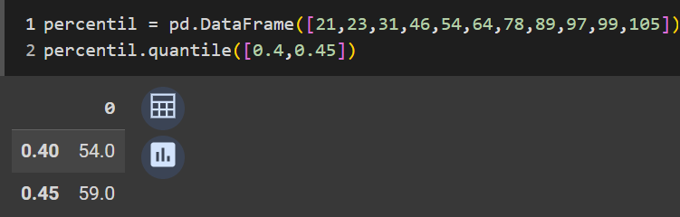O quartil é o mesmo conceito do percentil, porém referente somente a 3 valores de percentil: 25%, 50% e 75%.
Aqui estão os valores dos quartis:
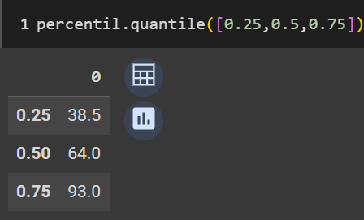Caso seja utilizado o describe, ele exibe contagem, média, desvio padrão, valor mínimo, valor máximo e todos os quartis:
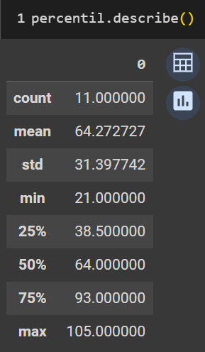As medidas de dispersão são utilizadas para verificar a variabilidade dentro de um conjunto de dados, tornando-se mais confiável nessa amostra.
A amplitude é a diferença entre o maior e o menor valor dentro de um conjunto de dados.
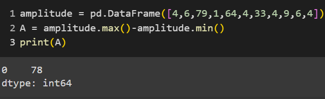No exemplo acima, o menor dado no DataFrame é 1 enquanto o maior é 79, logo a amplitude = 78
Amplitude = 79 - 1
Amplitude = 78
A variância é uma forma de medir o quanto os valores de um grupo de números são diferentes entre si. Se todos os números forem iguais, a variância é zero, porque não há diferença entre eles. Mas se os números forem muito diferentes uns dos outros, a variância será maior.
Um exemplo de variância:
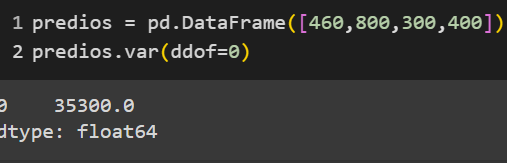